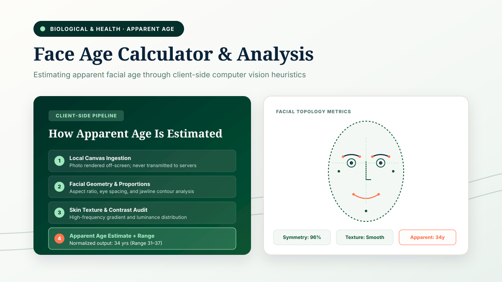
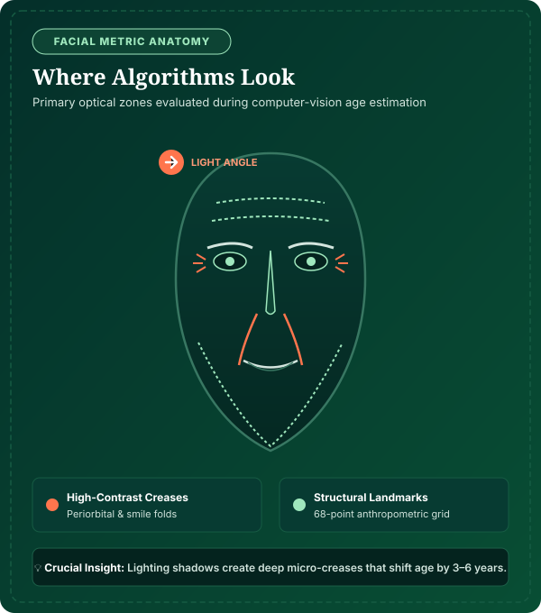
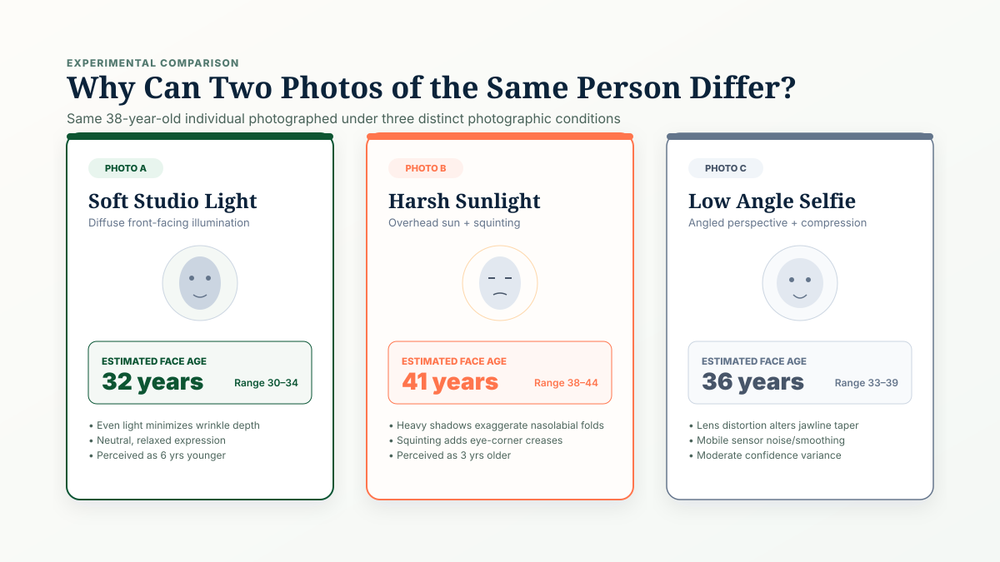
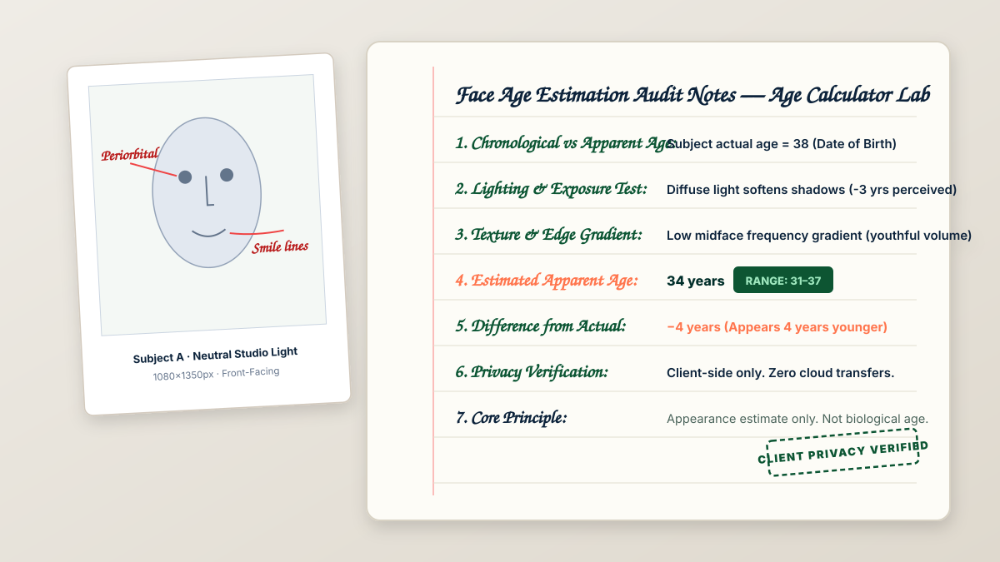
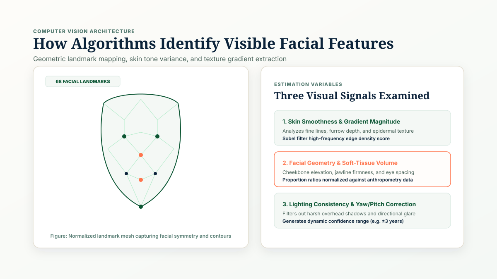

Face Age Calculator
Upload a clear face photo and get an estimated apparent age based on visible facial features, skin texture gradients, and contour symmetry. Runs 100% in your browser with private client-side processing.


Estimate Apparent Face Age
Drop your face photo here
Drag and drop your image, or choose a file from your device. Single frontal portrait recommended.
✓ Best results
- Front-facing, eye-level angle
- Even, natural ambient lighting
- Neutral, relaxed expression
✕ Avoid
- Heavy filters or sunglasses
- Harsh direct backlighting
- Crowds or group photos
Select a face photograph on the left to view an estimated apparent age and facial feature metrics.
Get Your Face Age Estimate in Four Clear Steps
The calculator runs entirely inside your browser's memory, applying computer-vision heuristics without transmitting or storing any personal photos.
Choose or Capture Photo
Upload a clear frontal portrait or take a selfie under even, diffuse natural lighting.
Browser Face Detection
HTML5 Canvas isolates the primary face region and verifies illumination consistency.
Texture & Landmark Scan
Spatial gradient algorithms evaluate skin smoothness, smile lines, and contour symmetry.
Review Apparent Age
Receive your estimated apparent age, 6-year range, and individual facial feature metrics.
What Can Affect Face Age?
Six primary visual variables dictate how automated computer-vision heuristics evaluate apparent facial age in a snapshot.

Skin Texture & Elasticity
Visible epidermal smoothness, furrow depth around the eyes, and nasolabial fold definition heavily guide automated texture gradient algorithms.
Ambient Lighting
Directional or harsh midday sunlight casts deep micro-shadows that exaggerate creases. Diffuse, soft lighting reflects evenly, often yielding a 3–5 year younger appearance.
Facial Expression
Squinting or grimacing creases forehead skin and tightens eye corners. A relaxed, natural expression keeps landmark geometry aligned with baseline youth metrics.
Camera Resolution & Blur
Low-resolution sensors or optical motion blur soften facial lines, artificially lowering estimated age. Ultra-high-resolution macro photography exposes every microscopic pore.
Camera Angle & Focal Length
Wide-angle mobile lenses (24mm–28mm) distort central facial features, exaggerating nose projection. Portrait focal lengths (50mm–85mm) provide true anatomical proportions.
Styling, Eyewear & Makeup
Eyeglass frames can obscure periorbital lines. Concealer evens skin tone gradients, while beards or distinct hairstyles can shift perceived maturity substantially.
Face Age vs Actual Age vs Biological Age
In longevity science and personal wellness, three distinct concepts are often confused. Here is how they fundamentally differ:
Date of birth ➔ Calendar duration ➔ Legal eligibility, retirement age, driving rights, and official government birth records.
Facial appearance ➔ 2D computer-vision landmark mesh ➔ Photo, angle, and lighting specific visual evaluation.
DNA methylation biomarkers ➔ Organ performance & VO2 max ➔ Clinical longevity research & lifestyle wellness.
| Age Dimension | What It Measures | Primary Data Source | Key Application |
|---|---|---|---|
| Chronological Age | Elapsed calendar duration since birth | Official Date of Birth (Calendar midnights) | Legal eligibility, retirement age, driving rights, birth records |
| Face / Apparent Age | Estimated perceived age based on visible facial appearance | Photograph / 2D Computer Vision Landmarks | Personal curiosity, photo comparison, aesthetic evaluation |
| Biological Age | Physiological health and rate of cellular aging | Epigenetic DNA methylation, blood panels, VO2 max | Clinical longevity research, preventative health medicine |
Why Two Photos of the Same Person Produce Different Estimates
Because automated algorithms evaluate pixels rather than genetics, altering lighting or camera angle produces noticeable shifts in perceived age.

Figure 1: Photographic Variance in Action
The exact same 38-year-old individual evaluated across three conditions: Photo A in diffuse studio light (32 years), Photo B under harsh midday sun with squinting (41 years), and Photo C via a low-angle mobile selfie (36 years). Algorithms evaluate light reflection and furrow depth—not biological genetics.

Figure 2: Research Audit Worksheet & Mathematical Breakdown
Deconstructing apparent age variables on a sample portrait: Subject chronological age 38, evaluated against diffuse studio illumination and low midface texture gradient, yielding an apparent face age of 34 years (range 31–37). Notice how soft-tissue volume and forehead smoothness guide the lower-bound index.

Figure 3: Geometric Landmark Topology Analysis
Mapping 68 facial points to track eye corners, jawline contours, and midface soft-tissue volume against normative anthropometric training sets. Key ratios include philtrum-to-chin distance and inter-pupillary alignment.
How to Get a Better Face Age Estimate
Follow these practical guidelines to give computer-vision heuristics the cleanest data possible.
✓ DO (Recommended Practices)
- Soft, Frontal Light: Face a window with natural indirect light to eliminate harsh eye shadows.
- Direct Camera Level: Hold the camera level with your eyes, avoiding extreme low or high angles.
- Neutral, Relaxed Expression: Avoid furrowing your brow, squinting, or forcing an exaggerated smile.
- High-Resolution Original: Avoid heavily compressed social media screenshots or cropped thumbnails.
✕ AVOID (Common Pitfalls)
- Heavy Beauty Filters: Smoothing filters blur landmark geometry, making age estimates unreliable.
- Overhead Fluorescent Lighting: Casts harsh vertical shadows under the brow and cheekbones.
- Group Photos: Multiple faces cause bounding box ambiguity. Upload single-subject portraits.
- Coverings & Hats: Wide-brimmed hats or dark sunglasses obscure over 40% of key landmarks.
Primary Use Cases
Explore how people utilize facial age estimation for personal exploration, photography, and lifestyle tracking.
Personal Curiosity
Answer the age-old question: "How old do I look in this photo?" using objective geometric analysis.
Photo Selection
Compare professional headshots, resume photos, and profile pictures to determine which looks most vibrant.
Lighting Experimentation
Test how different indoor vs outdoor lighting conditions alter the perceived age of your portrait.
Tech & AI Exploration
Discover firsthand how computer-vision models interpret human facial geometry without medical pretense.
Lifestyle Tracking
Compare portraits taken after rigorous sleep and hydration routines against photos taken during high-stress periods.
Entertainment & Sharing
Share interesting apparent-age comparisons with family and friends for friendly social reflection.
Responsible AI & Privacy Architecture
Transparency regarding computer-vision limitations and user privacy is central to Age Calculator Lab.
🔒 100% Client-Side In-Browser Execution
Unlike online tools that upload your personal photographs to remote cloud servers for facial recognition analysis, Age Calculator Lab processes your photo entirely within your browser's local memory using HTML5 Canvas. Your photograph never leaves your device, is never transmitted across the network, and is never stored, sold, or used for machine learning training. Once you close or refresh this webpage, all temporary canvas image buffers are immediately cleared.
| Input Parameters | Single frontal facial photograph (JPEG, PNG, WebP format). Supported size up to 15MB. |
| Processing Architecture | Client-side HTML5 Canvas API; heuristic high-frequency edge density & landmark proportion tracking. |
| Output Metrics | Estimated apparent age (years) + 6-year uncertainty range + feature confidence rating. |
| Network Transfers | 0 bytes transmitted. No remote server uploads, analytics, or third-party cloud models. |
| Image Retention | 0 bytes stored. Ephemeral in-memory image buffer cleared on page refresh or browser exit. |
| Editorial Lead | Navjeet Kamboj, Founder & Technical Developer, Age Calculator Lab. Last verified: October 2026. |
Disclaimer: Face-age results are estimates based on photographic appearance. They do not constitute measurements of chronological age, biological age, health, or clinical dermatological status.
Frequently Asked Questions About Face Age
Clear answers to the most common questions regarding facial age estimation, privacy, and accuracy.
What is a face age calculator?
A face age calculator is an informational computer-vision tool that estimates a person's apparent age by analyzing visible facial characteristics such as skin texture, contour symmetry, and feature proportions in a photograph.
How does a face age calculator work?
The tool processes a photo in your browser, locates the face, examines spatial gradient patterns (skin smoothness, furrow depth), measures anthropometric landmark ratios, and calculates an estimated apparent age range.
How accurate is a face age calculator?
Face age calculators produce an approximate visual estimate, not a scientific or medical measurement. Results can vary by several years based on lighting, camera angle, facial expression, image resolution, and styling.
Is face age the same as real age?
No. Real chronological age is the exact calendar duration elapsed since your birth date. Face age is merely a subjective reflection of visible facial appearance in a single snapshot.
Is face age the same as biological age?
No. Biological age reflects cellular health, DNA methylation patterns, and organ vitality measured through clinical biomarkers. Face age evaluates only superficial surface appearance.
Can lighting affect face age estimation?
Yes. Harsh overhead lighting creates deep shadows under the eyes and along smile lines, which can increase the estimated age by 3 to 6 years compared to diffuse, even lighting.
Can makeup affect the estimated age?
Yes. Foundation and concealer smooth epidermal texture gradients, while eye makeup alters perceived contrast, which may produce a younger or older apparent age depending on application.
Why can two photos give different face-age results?
Even for the same individual on the same day, subtle variations in head tilt, camera lens focal length, smile lines, squinting, and ambient exposure alter the image pixels that the algorithm analyzes.
Can I upload another photo?
Yes. You can test multiple photos, compare different lighting setups, and evaluate how various angles impact your estimated facial score at any time.
Does the face age calculator store my photo?
No. Age Calculator Lab uses a private-by-design client-side implementation. Your image is processed entirely inside your web browser using HTML5 Canvas and is never transmitted to or saved on our servers.
Can a face age calculator determine my actual age?
No algorithm can determine your actual calendar birth date from a photograph alone. The tool provides an approximate estimate of perceived visual age.
Can face age estimation be used for medical purposes?
No. The Face Age Calculator is designed strictly for educational, informational, and personal exploration purposes. It provides no clinical diagnosis, dermatological assessment, or health appraisal.
Facial Age Research & Authority Cluster
Explore comprehensive guides on computer vision pipelines, accuracy benchmarks, photo factors, and aging dimensions.